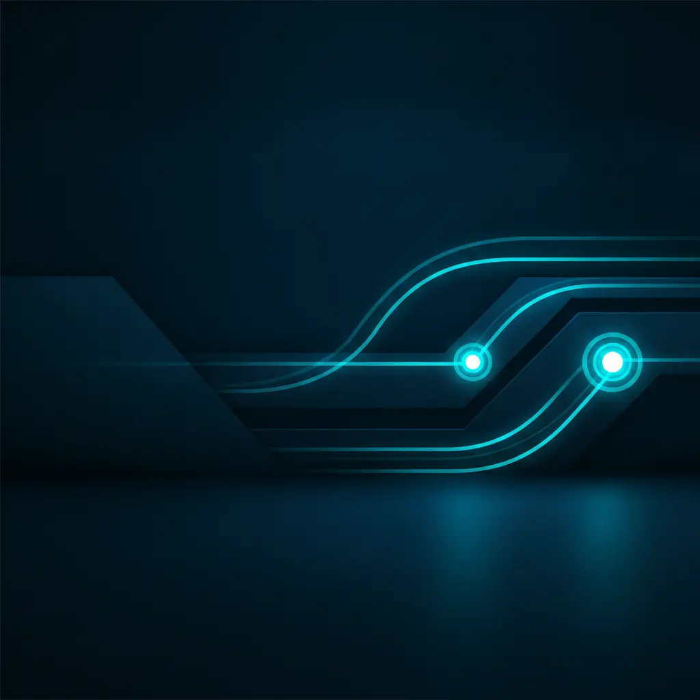
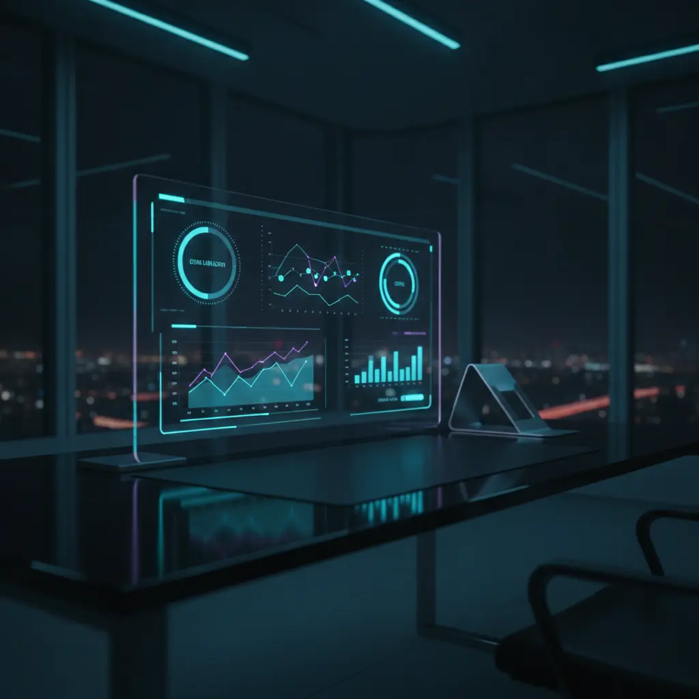

Die Architekten für stabile und wartbare IT-Automatisierung
Die Finaler Test GmbH steht für verlässliche Technologie, transparente Prozesse und kompromisslose Qualität im geschäftlichen Alltag.

Technologie muss funktionieren. Punkt.
Wir haben die Finaler Test GmbH mit einer klaren Mission gegründet: Wir wollen die Kluft zwischen technologischem Hype und der realen, produktiven Anwendung im Unternehmen schließen.
Viel zu oft erleben wir, dass ambitionierte Digitalisierungsprojekte in endlosen Konzeptphasen steckenbleiben oder als instabile Prototypen enden, die im echten Arbeitsalltag mehr Probleme verursachen, als sie lösen. Unser Leitmotiv „Betrieb statt Buzzword“ ist daher kein leerer Slogan, sondern das Fundament unserer täglichen Arbeit.
Für uns bedeutet professionelle Softwareentwicklung und IT-Dienstleistung, dass Systeme leise, zuverlässig und sicher im Hintergrund laufen. Wir messen unseren Erfolg nicht an der Anzahl der genutzten Modewörter, sondern an der Stabilität Ihrer Prozesse, der Zufriedenheit Ihrer Mitarbeiter und der messbaren Entlastung Ihres Unternehmens. Wir hören genau zu, analysieren präzise und bauen Lösungen, die langfristig Bestand haben und flexibel mit Ihrem Unternehmen mitwachsen können.

Kompromisslose Stabilität
Ein System, das nicht zu 100 % zuverlässig läuft, ist im geschäftlichen Alltag wertlos. Wir investieren viel Zeit in robuste Fehlerlogiken, automatische Fallbacks und umfassendes Monitoring.
Absolute Transparenz
Wir kommunizieren offen, ehrlich und auf Augenhöhe. Sie erhalten von uns eine realistische Einschätzung der Machbarkeit, transparente Kostenstrukturen und eine lückenlose Dokumentation.
Echter Pragmatismus
Wir suchen stets nach der effizientesten und stabilsten Lösung für Ihr konkretes Problem. Wir vermeiden unnötige Komplexität und bauen Systeme, die sich nahtlos in Ihre bestehende IT einfügen.
Unsere Geschichte und Expertise
Die Finaler Test GmbH vereint langjährige Erfahrung in der Softwarearchitektur, der Systemintegration und der Prozessoptimierung.
Unser Team besteht aus leidenschaftlichen Entwicklern, Systemarchitekten und IT-Beratern, die bereits zahlreiche komplexe Projekte in unterschiedlichen Branchen erfolgreich realisiert haben. Wir kennen die Herausforderungen moderner IT-Infrastrukturen aus der Praxis und wissen, worauf es bei der Verknüpfung heterogener Systeme ankommt.
Mit der rasanten Entwicklung im Bereich der künstlichen Intelligenz haben wir frühzeitig erkannt, dass der Schlüssel zum Erfolg nicht in den Modellen selbst liegt, sondern in ihrer stabilen und sicheren Integration in bestehende Geschäftsprozesse. Genau auf diese anspruchsvolle Schnittstelle haben wir uns spezialisiert. Wir sorgen dafür, dass moderne KI-Technologien ihre theoretische Leistungsfähigkeit im harten, produktiven Alltag Ihres Unternehmens voll entfalten können.
Heute vertrauen uns mittelständische Unternehmen und etablierte Betriebe, die ihre Digitalisierung auf ein solides, zukunftssicheres Fundament stellen wollen. Wir sind stolz darauf, dass unsere Lösungen täglich tausende von Prozessschritten fehlerfrei ausführen und einen wesentlichen Beitrag zur Wettbewerbsfähigkeit unserer Kunden leisten.
Global denken, lokal handeln: Unsere Standorte
Die Finaler Test GmbH ist international aufgestellt, um Ihnen die optimale Kombination aus regionaler Nähe, deutscher Ingenieursqualität und globaler Flexibilität zu bieten.
Hauptsitz Braunschweig, Deutschland
Steinriedendamm 15, Gebäude 2, 38108 Braunschweig
In der traditionsreichen Forschungs- und Technologieregion Braunschweig schlägt das Herz unseres Unternehmens. Hier sitzen unsere Systemarchitekten, Projektleiter und Berater. Von hier aus steuern wir unsere Projekte im deutschsprachigen Raum und sichern die Einhaltung unserer strengen Qualitäts- und Sicherheitsstandards.
Standort Balaclva, Mauritius
Victory Drive 100, Balaclva, Mauritius
Unser internationaler Standort in Balaclva ermöglicht uns eine flexible, globale Perspektive und sichert uns den Zugang zu einem hochqualifizierten, internationalen Talentpool. Hier unterstützen uns erfahrene Entwickler bei der kontinuierlichen Betreuung, Wartung und Weiterentwicklung unserer weltweiten Automatisierungssysteme.
Unsere Kultur: Leidenschaft für exzellente Software
Hinter der Finaler Test GmbH steht ein Team von Technologie-Enthusiasten, die sich nicht mit dem erstbesten Ergebnis zufriedengeben.
Wir pflegen eine Kultur des kontinuierlichen Lernens, des offenen Austauschs und der gegenseitigen Unterstützung. Jedes Teammitglied bringt seine individuellen Stärken und Spezialisierungen ein, um für unsere Kunden das bestmögliche Ergebnis zu erzielen.
Wir glauben, dass exzellente Software nur in einem Umfeld entstehen kann, das von Vertrauen, Eigenverantwortung und flachen Hierarchien geprägt ist. Wir arbeiten agil, lösungsorientiert und mit einem hohen Anspruch an die Qualität unseres Codes. Diese Leidenschaft für technische Präzision und handwerkliche Exzellenz spüren unsere Kunden in jedem einzelnen Projekt und in der außergewöhnlichen Stabilität unserer Systeme.
Lernen Sie uns persönlich kennen
Wir laden Sie herzlich ein, mehr über uns, unsere Arbeitsweise und unsere Referenzprojekte zu erfahren. Lassen Sie uns in einem unverbindlichen Gespräch herausfinden, wie wir Ihr Unternehmen technologisch unterstützen können.